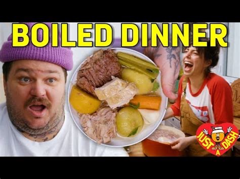

boiled dinner. wompwomp

Hey you! come here.
Do you know how to cook? no one cares lol. boil this stuff and smile as you eat it!
Ingredients:
- 2 bone-in rib eye
- 2-3 marrow bones
- 1 side pork rib, cut into 3
- 1 whole chicken
- 2 carrot, peeled
- 2 celery stalks, cut in half
- 1 rutabaga, peeled and cut into wedges
- 1 leek stalk, dark green removed
- 4 Yukon gold potatoes, peeled
- 4 turnips, peeled and quartered
- 1 cup pearl onions, peeled
- 1 cup button mushrooms
- 3 tbsp chopped thyme
- salt
Directions:
- Place ribeye, bone marrow and pork ribs in a very large pot.
- Cover with cold water and heat over high.
- Allow scum to rise to surface of water.
- Remove by skimming the surface of the liquid with a ladle.
- Discard.
- Reduce heat and simmer for 2 hours
- Place chicken, vegetables and herbs in pot, cover and continue to cook over low heat until chicken is cooked through, about 1 more hour.
- Remove meat and vegetables from broth and set aside.
- Strain broth through a fine mesh sieve.
- Season with salt
- Slice meat.
- Place a few slices of the various meats and vegetables into shallow bowl, ladle broth over and serve.